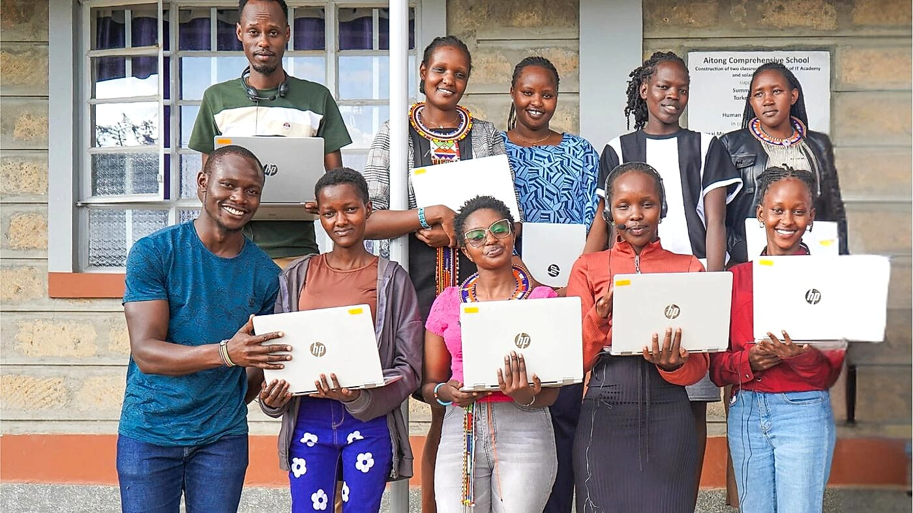
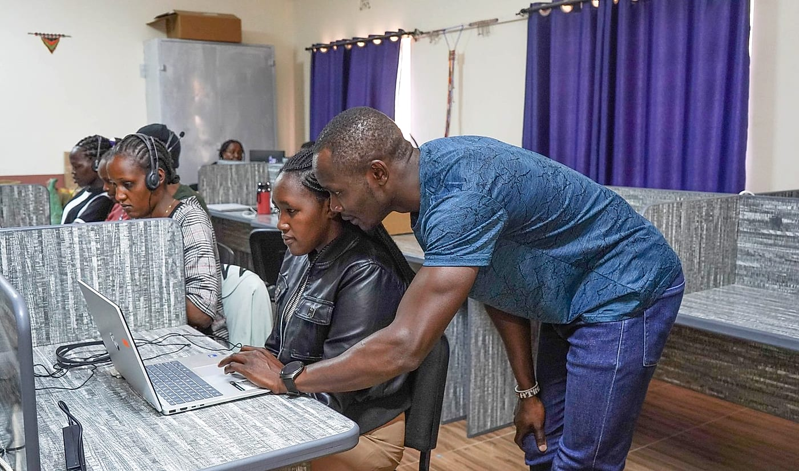
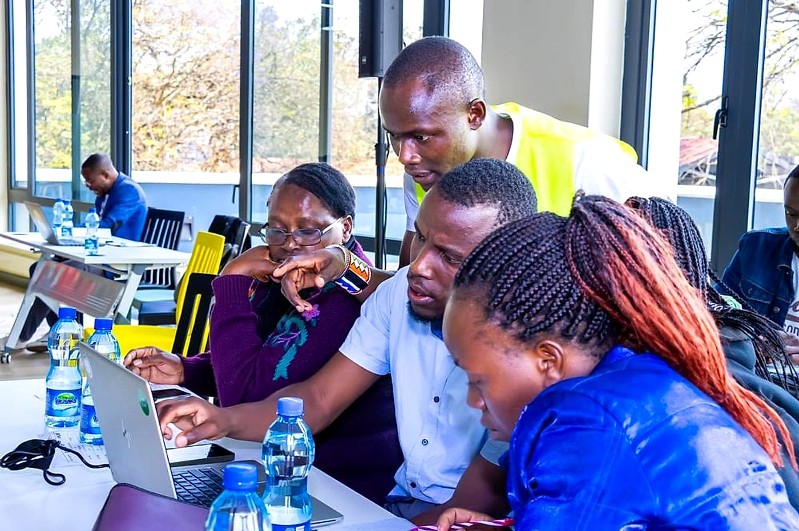
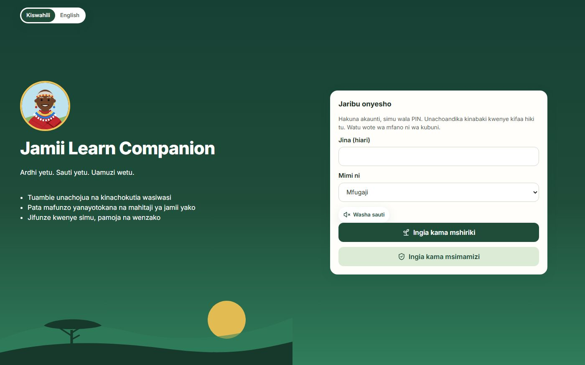
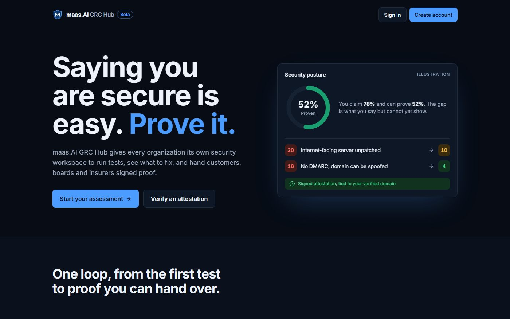

Experience
Five years of building digital programmes
Five years, one thread: making technology work where it is hardest to deliver. Work since 2021, sorted by type: employment, consulting, personal projects and volunteering.
Employment

Skills Development Programme Lead, IT Academy
Jan 2026 – Dec 2026 · ContractHuman Practice Foundation · Aitong, Maasai Mara, Kenya · Contract title: IT Officer
Pastoralist youth arrive never having used a computer. One cohort later, graduates are earning on digital work platforms.
- 26 fellows in the cohort
- KES 25M programme budget
- 3 tracks
- Lead the learn-to-earn fellowship across three tracks: web development, cybersecurity and data analytics.
- Supervise the trainers, and own recruitment, onboarding, coaching, data protection and impact reporting.
More detail on the IT Academy
- Mentoring the current cohort of 20 fellows: 11 in full-stack development (MERN) and 9 in data analytics and AI, building for climate, employability and mental health.
- Negotiated the Phase 2 partnership with Power Learn Project Africa, with weekly partner and monthly donor reporting.


Digital Literacy Program Manager, Mt Kenya Region
Mar 2024 – Dec 2025Human Practice Foundation · Mount Kenya Region, Kenya
There was no school digital literacy programme when I started. I built one, starting in the staff room.
- 1programme, built from zero
- 23+schools
- 798+teachers trained
- 5,000+learners reached
- Built the programme from zero: curriculum, teacher training and the monitoring behind it.
- Set up reporting in Salesforce and Power BI, so decisions came from real usage data.
More detail on the Mt Kenya programme
- Wrote the standard operating procedures, so every school ran the programme the same way.
- Deployed library management systems and kept school hardware, software and networks working.

Assistant Financial Accountant & ICT Support
Nov 2021 – Dec 2023The Lewa Wildlife Conservancy · Isiolo, Kenya
Kept systems up for a conservancy team in the field, and donor money accounted for.
- 150+ staff supported
- 99.9% uptime
- 0 major audit findings, two years
- Primary IT support, resolving 95% of tickets within SLA.
- Monthly donor analysis and quarterly financial reports; Sage Evolution ERP, payables and receivables.
- Microsoft 365 and cybersecurity training for staff.
- Cut IT procurement costs by 15% through vendor negotiation and hardware lifecycle planning.
Independent consulting

AI in Education: Trainer and Co-Designer
ConsultingIndependent · With teachers and ecosystem builders across Kenya
At one session, a teacher with no internet built an offline Excel tool for attendance, lesson prep and assessment. That is the model: teachers solve their own problems, with technology as a companion.
- Co-design sessions where teachers bring a classroom problem and leave with a working tool they built.
- Training for teachers and school leaders on using AI for planning, assessment, records and feedback.
Co-Lead, Programme Design, SELution
ConsultingIndependent consultancy · Play-based learning venture · Kajiado, Kenya
Social emotional learning, reading, numeracy and unplugged coding taught through play and low-cost kits, for schools that will never have a lab.
- Designed the cascade: master trainers, district facilitators and fortnightly teacher coaching.
- Built per-child measurement that rolls up to cluster dashboards.
- Scoping a first pilot of 8 to 15 schools with a Kajiado-based partner.
Personal projects
Working tools I designed and built myself, live and open to try.

Enkaji Play
Six Bricks play on the family phone for Mothers Who Teach in Sekenani. No reading needed. Open Enkaji Play (opens in a new tab)
Jamii Learn Companion
Carbon market basics for herders and parents, taught as a conversation on their own phone. Open the live demo (opens in a new tab)
maas.AI GRC Hub
A security workspace for schools, NGOs and small businesses: test, fix what matters first, share signed proof. Open the public beta (opens in a new tab)Volunteer work
World Robot Olympiad judge and organiser (2024, 2025), STEM mentoring with WiSSAfrica, and advisory roles in education and conservation. Unpaid, alongside my jobs.